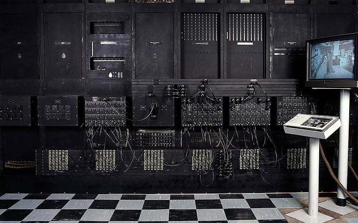

Historie

Dějiny počítačů zahrnují vývoj jak samotného Hardware, tak
jeho architektury a mají přímý vliv na vývoj
Software.
Za jejich vynálezce je přesto považován Charles
Babbage, který již v 19. století vymyslel základní
principy fungování stroje pro řešení složitých výpočtů.
První číslicové počítače byly vyrobeny ve 30. letech 20. století.
Počítačů stále přibývá, jejich výkon roste a postupně zasahují do
nejrůznějších
oblastí
lidského života.
Předchůdci
První zařízení, která se později vyvinula v dnešní počítače, byla
velmi
jednoduchá
a byla
založena na
mechanických principech. Vývoj probíhal až do poloviny 20. století ve dvou větvích: Analogové
počítače a
Číslicové
počítače.
Analogové
počítače modelovaly
problém převedením do jeho mechanické nebo elektrické analogie, číslicové pak jeho
převedením na číselné hodnoty a jejich numerickým zpracováním.
S vývojem číslicové techniky během 2. poloviny 20. století analogové
počítače
prakticky
vymizely, používají se
jen na specializovaná řešení.
Mechanické kalkulátory
První mechanické zařízení, které patrně sloužilo k výpočtům, je Mechanismus z
Antikythéry,
vzniklý
někdy
mezi roky 150 a 100 př. n. l. Podle dnešních poznatků sloužil k výpočtu kalendáře resp. polohy slunce,
měsíce a planet.
Mechanismus se skládal z více než třiceti ozubených koleček seřazených v rovnostranných
trojúhelnících a
na svou
dobu byl skutečně miniaturní. Zajímavé je, že mechanizmus je nejspíš založen na
heliocentrickém principu
(tedy
Země obíhá kolem Slunce), který se jako kosmologická teorie ujal v Evropě až o osmnáct
století později.
První programovatelné stroje
V roce 1833 Charles Babbage pokročil od
vývoje svého
„Diferenciálního stroje“ (Difference engine) k lepšímu
návrhu „Analytického stroje“ („Analytical engine“), který se stal prvním univerzálním Turingovsky
úplným
počítačem (dokáže emulovat jiné stroje pouhou změnou programu bez nutnosti fyzické
přestavby).
Jeho cílem bylo postavit univerzální programovatelný počítač používající jako vstupní
médium děrné
štítky.
Struktura stroje obsahovala „sklad“ (paměť) a „mlýnici“ (procesor), což mu umožňovalo činit
rozhodnutí a
opakovat instrukce – přesně jako to dělají dnešní počítače pomocí příkazů IF … THEN … a LOOP
(resp.
FOR).
Jeho počítač měl pracovat s 50místnými čísly s pevnou desetinnou čárkou. Uvažovaný pohon
měl obstarat
parní
stroj. Pokus o sestavení stroje skončil neúspěšně, když byl nejprve zpomalen hádkami s
řemeslníkem
nepřesně
vyrábějícím ozubená kola a později zcela zastaven kvůli nedostatečnému financování.
Babbage zjistil, že pro svůj stroj bude potřebovat programátora. Najal tedy mladou ženu se
jménem Ada Lovelace
(dceru básníka Lorda Byrona), která se tak
stala
prvním programátorem na světě (jako nadaná matematička se
aktivně na vývoji stroje a teorie programování podílela) a na její počest byl nazván
programovací jazyk
Ada.
Stroje pro hromadné zpracování dat
Přímým předchůdcem dnešních počítačů je použití (jednoúčelových) strojů pro hromadné
zpracování dat,
které
využívaly děrné štítky.
Při 11.
sčítání lidu v USA v roce 1890 jejich použití navrhl a
realizoval Herman Hollerith, stejně jako
použití
zmíněných děrných štítků pro uložení a kódování získaných dat (jeho firma se
později změnila na firmu IBM).
Nultá generace
Za kalkulačky nulté generace jsou považovány elektromechanické počítače využívající
většinou relé.
Pracovaly
obvykle na kmitočtu okolo 100 HZ. Hybnou silou vývoje nulté
generace se stala druhá
světová
válka, kdy došlo k
velkému pokroku souběžně v různých částech světa.
Z1
První, komu se podařilo sestrojit fungující počítací stroj, byl německý inženýr Konrad Zuse. V roce 1934 začal
pracovat na konstrukci mechanické výpočetní pomůcky a po řadě různých zdokonalení dokončil v
roce 1936
základní
návrh stroje pracujícího v dvojkové soustavě s aritmetikou v plovoucí čárce a programem na
děrné pásce
(jako
nosič byl použit kinofilm). Neznalost prací Babbageho a jeho následovníků
však měla za
následek, že Zuse do
svého projektu nezahrnul podmíněné skoky. Přes tento nedostatek však můžeme tvrdit, že roku
1938
spatřil světlo
světa první počítač nazvaný Z1. Byl ještě elektromechanický s kolíčkovou pamětí na 16 čísel
a byl velmi
poruchový, pro praktické použití nevhodný.
První generace (1945 až 1950)
První generace je charakteristická použitím elektronek
(tzv. elektronika) a v menší míře též
ještě relé
(elektromechanika). Počítače byly poměrně neefektivní, velmi drahé, měly vysoký příkon,
velkou
poruchovost a
velmi nízkou výpočetní rychlost. Zpočátku byl program vytvářen na propojovacích deskách,
později byly
využity
děrné štítky a děrné pásky,
které
též sloužily spolu s řádkovými tiskárnami k uchování výsledků. V té době
neexistovaly ani operační systémy
ani
programovací jazyky ani
assemblery.
Počítač
se ovládal ze Systémové konzole.
Jeden
tým lidí pracoval jako konstruktéři, operátoři i technici, jejichž úspěchem bylo ukončit
výpočet
bez poruchy počítače.
Druhá generace (1951 až 1964)
Počítače druhé generace charakterizuje použití tranzistorů (tzv. polovodičová elektronika), které dovolily
zlepšit všechny parametry počítačů (zmenšení rozměrů, zvýšení rychlosti a spolehlivosti,
snížení
energetických
nároků). Počítače byly dosud spíše unikátní konstrukce, užívané na univerzitách a v
základním výzkumu k
řešení
úloh s velkými nároky na výpočty na poměrně omezeném objemu dat. Ve druhé generaci pronikají
do běžného
života,
například do obchodu, administrativy, komunikací nebo skladování dat, kde se vyžaduje
poměrně jednoduché
zpracování na velmi velkých objemech dat.
Třetí generace (1965 až 1980)
Třetí generace je charakteristická použitím integrovaných obvodů
(tzv. polovodičová elektronika). S
postupem
času roste počet tranzistorů v integrovaném obvodu (zvyšuje se integrace). V této době byl
výkon
počítače úměrný
druhé mocnině jeho ceny, takže se vyplatilo koupit co nejvýkonnější počítač a poté prodávat
jeho
strojový čas.
Majitelé požadovali maximalizaci využití počítače, proto se objevilo multiprogramování –
zatímco jeden
program
čeká na dokončení I/O operace, je procesorem
zpracovávána druhá úloha.
Čtvrtá generace (od roku 1981)
Čtvrtou generaci charakterizují mikroprocesory a osobní počítače
.
Mikroprocesory
v jednom pouzdře obsahují
celý procesor (dřívější procesory se skládaly z více obvodů) a jsou to integrované obvody s
vysokou
integrací,
které umožnily snížit počet obvodů na základní
desce počítače, zvýšila se spolehlivost, zmenšily rozměry,
zvýšila rychlost a kapacita pamětí. Nastává ústup střediskových počítačů
(mainframe)
ve prospěch pracovních stanic a v
roce 1981
uvedeného osobního počítače IBM PC . Počítač
shodné konstrukce vyrábějí i jiní výrobci jako
tzv. IBM PC kompatibilní
počítače.
Přichází éra systémů DOS a vznikají
grafická
uživatelská
rozhraní . Poměr cena/výkon
je
nejlepší u nejvíce prodávaných počítačů, vyšší výkon je vykoupen exponenciálním růstem ceny,
proto
se již nevyplatí koupit nejvýkonnější počítač na trhu a z mnoha běžných a laciných počítačů
vznikají clustery
. S
rozvojem
počítačových sítí
vzniká Internet , distribuované
systémy
. Výkon
počítačů se zvyšuje použitím několika
procesorů (multiprocesory
).
Budoucnost
Další generace zatím nejsou známy a není jisté, jakým směrem se bude vývoj ubírat. Už delší
dobu se
experimentuje s počítači na jiném fyzikálním základu. Probíhají pokusy s fotonovými
počítači
a na
kvantových
počítačích
se
intenzivně pracuje.
První komerční kvantový počítač IBM
Q
System One
byl představen v lednu 2019.